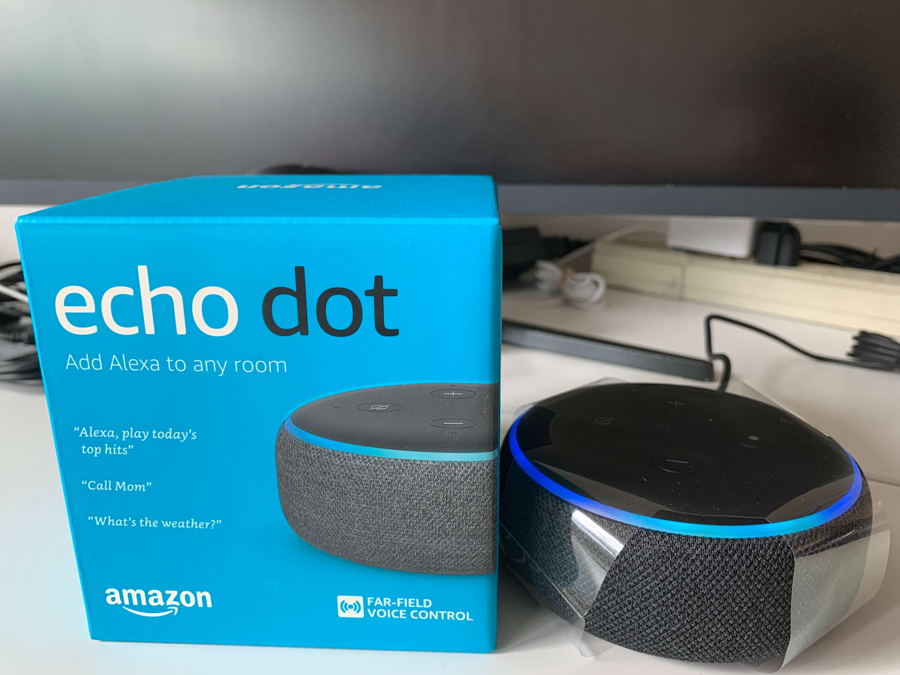

This article is about setting up an Amazon Fire TV Stick, and is only available in Chinese.
今年感恩节假期因为美国疫情失控，最终临时取消了去外州旅游的计划。四天闷在阴雨连绵的西雅图感觉挺没劲的，不过好在趁着黑五购物季下单的亚马逊智能电视盒子 Fire TV Stick 和智能音箱 Echo Dot 在假期尾声送到了，于是乎稍微折腾了一番，也算是没有完全浪费掉好不容易等到的一个长假期。这篇文章记录了我对于配置 Fire TV Stick 的一些建议。
为什么要买 Fire TV Stick 和 Echo Dot
我现在的公寓里目前只有一台32寸2K曲面显示器，并没有电视机。我之所以一直想买个电视盒子，是因为坐在床上看视频时一开始用蓝牙鼠标操作电脑感觉很不方便。虽然我后来尝试了一款叫  Remote Mouse 的应用，但因为电脑在显示器上的分辨率很高，床又离显示器有点远，所以坐在床上时看不清楚文字和光标，操作起来还是有一点不便。而亚马逊的 Fire TV Stick 配有遥控器，加之是基于 Android 系统可定制性强，价格又比 Apple TV 亲民得多，黑五以$29.99入手一支原价$49.99的4K版还是很划算的。
Remote Mouse 的应用，但因为电脑在显示器上的分辨率很高，床又离显示器有点远，所以坐在床上时看不清楚文字和光标，操作起来还是有一点不便。而亚马逊的 Fire TV Stick 配有遥控器，加之是基于 Android 系统可定制性强，价格又比 Apple TV 亲民得多，黑五以$29.99入手一支原价$49.99的4K版还是很划算的。
买 Echo Dot 的理由则比较简单：因为 Fire TV Stick 默认通过电视的内置音箱播放声音，而我是把电脑显示器当电视用。众所周知，显示器内置音箱的音效一般都很差，所以我需要一台外置音箱。亚马逊的电视盒子当然要搭配自家的音箱用会比较好，而 Echo Dot 的第三代和第四代感觉功能上没什么区别，第四代体积大反而更占地方，所以以$18.99买一台原价$39.99的第三代 Echo Dot 就够了。
配置硬件
配置硬件的部分基本上跟着说明书一步步操作就行了。我是先收到的 Echo Dot，所以先在手机上安装  Amazon Alexa 应用 让音箱先工作起来。收到 Fire TV Stick 之后把它插到显示器上，再配对好遥控器，然后跟着向导设置即可。
Amazon Alexa 应用 让音箱先工作起来。收到 Fire TV Stick 之后把它插到显示器上，再配对好遥控器，然后跟着向导设置即可。
对于在显示器上用 Fire TV Stick，这里有一点需要额外注意：设置向导里有一步是让你按 Fire TV 遥控器的音量增大、减小键检查输出音量是否发生变化，而显示器的内置音箱可能对这两个按键并没有效果，输出音量没有变化。这种情况下直接在屏幕上选 Yes 跳过即可（选 No 的话后面会让你重试很多次）。然后配置完 Fire TV Stick 之后去 Amazon Alexa 应用里添加一个声音系统 (Audio System)，把 Fire TV Stick 和 Echo Dot 或者其他蓝牙音箱组成一个家庭影院 (Home Theater)。这样的话 Fire TV Stick 就会通过音箱输出声音了，而且 Fire TV 遥控器的音量按键可以正确调节 Echo Dot 的音量。
最后推荐在手机上安装  Fire TV 应用。虽然这个应用本意是用来代替实体遥控器的，看上去没有太大的用处，但它的好处是当你在电视上要输入很长一串文字时，用实体遥控器一个一个选择字母非常不方便，而用这个应用的话会方便很多。（但不得不承认，iOS 内置虚拟 Apple TV 遥控器要比 Fire TV 的这个遥控器应用好用得太多了……）
Fire TV 应用。虽然这个应用本意是用来代替实体遥控器的，看上去没有太大的用处，但它的好处是当你在电视上要输入很长一串文字时，用实体遥控器一个一个选择字母非常不方便，而用这个应用的话会方便很多。（但不得不承认，iOS 内置虚拟 Apple TV 遥控器要比 Fire TV 的这个遥控器应用好用得太多了……）
Fire TV 装机必备应用
Fire TV 跟其他美国的智能电视盒子相比最大的优势在于，它除了可以安装来自内置应用商店 Appstore 里的应用，也可以安装任何 Android 应用 （英文称之为 sideload）。这种高度的可定制性意味着我们可以通过安装任意 Android 应用来补全 Fire TV 很多没有自带的功能，例如翻墙回国以观看国内各大视频网站。
下面这些 Fire TV 应用我强烈推荐大家安装，其中有些可以直接在内置应用商店里下载安装，有些需要通过其他渠道获得，因此它们需要按照顺序依次安装。
需要注意的是，要从其他渠道安装应用，必须要事先在 Fire OS 的 Settings -> My Fire TV -> Developer Options 里打开 Apps from Unknown Sources 选项。具体步骤可以点这里。

 Downloader
Downloader
 Downloader
Downloader
Downloader 是 Fire OS 上的下载神器，我们可以利用它下载那些没有在内置应用商店里上架的 Android 应用的安装包（.apk文件）以及任何其他文件。它还内置一个简易浏览器，方便用户获取下载链接。因此，配置好 Fire TV Stick 后应该第一个安装它，而且后面提到的一些应用也需要用它来下载。这款应用可以直接在内置应用商店里获得。
 ES文件浏览器
ES文件浏览器
 ES文件浏览器
ES文件浏览器
ES文件浏览器一直都是 Android 系统上一款很不错的文件管理应用，这个 Fire OS 版本也不例外。其中一个比较强大的功能是它可以在 Fire TV Stick 上开启一个 FTP 服务器，然后我们可以通过电脑上的 FileZilla 等软件很方便地往电视盒子里传输文件。这款应用也可以直接在内置应用商店里获得。
 当贝市场
当贝市场
 当贝市场
当贝市场
我们可以从当贝市场里补全不少国内 Android 智能电视应用，例如  奇异果TV （爱奇艺TV版）、
奇异果TV （爱奇艺TV版）、 云视听小电视 （哔哩哔哩TV版）等。当贝市场需要通过 Downloader 访问 http://www.dangbei.com/apps/ 并点击「立即下载」获得。因为要输入一长串字母，这时之前提到的手机 Fire TV 应用就派上用场了。
云视听小电视 （哔哩哔哩TV版）等。当贝市场需要通过 Downloader 访问 http://www.dangbei.com/apps/ 并点击「立即下载」获得。因为要输入一长串字母，这时之前提到的手机 Fire TV 应用就派上用场了。
一款可以用来翻墙回国的应用
因为地域版权限制，很多国内视频音乐类应用里的内容在境外是无法播放的。例如，B站的正版番剧在境外看不了，网易云音乐或QQ音乐的很多歌在境外也无法播放。这时我们需要一款可以用来翻墙回国的应用来「解锁」这些音视频。
对于购买了会员的用户来说， 穿梭在速度和稳定性方面还是很好的。Fire TV 的内置应用商店里有穿梭的 Fire TV 版可供安装。然而跟手机版不同的是，免费用户只能试用TV版一天，过期了之后就必须购买，所以不想花钱的就可以不用考虑它了。（当然，你也可以在安装完后面推荐的一款鼠标应用后，用 Downloader 去官网下载 Android 手机版走免费线路，但这款鼠标应用有一些副作用，下文会提到。）
穿梭在速度和稳定性方面还是很好的。Fire TV 的内置应用商店里有穿梭的 Fire TV 版可供安装。然而跟手机版不同的是，免费用户只能试用TV版一天，过期了之后就必须购买，所以不想花钱的就可以不用考虑它了。（当然，你也可以在安装完后面推荐的一款鼠标应用后，用 Downloader 去官网下载 Android 手机版走免费线路，但这款鼠标应用有一些副作用，下文会提到。）

不想花钱的可以考虑  Malus。Malus 的TV版提供免费线路，只要注册一个账号就可以用了。免费线路的体验，不论在 Fire TV 上还是在电脑或手机上，都不是很理想，但至少这是一个翻墙回国的免费选项。Malus TV版可以直接在当贝市场里下载安装，也可以用 Downloader 访问官网 https://getmalus.com/tv 获得。当然，Malus 也有收费的会员服务。
Malus。Malus 的TV版提供免费线路，只要注册一个账号就可以用了。免费线路的体验，不论在 Fire TV 上还是在电脑或手机上，都不是很理想，但至少这是一个翻墙回国的免费选项。Malus TV版可以直接在当贝市场里下载安装，也可以用 Downloader 访问官网 https://getmalus.com/tv 获得。当然，Malus 也有收费的会员服务。

 Mouse Toggle for Fire TV
Mouse Toggle for Fire TV
 Mouse Toggle for Fire TV
Mouse Toggle for Fire TV在介绍这款应用之前先要讲一个概念。尽管理论上 Fire TV 上可以安装所有32位的 Android 应用，但这并不意味着这些 Android 应用都能在 Fire TV 上正常工作。其背后的原因在于：大多数手机版的 Android 应用并没有对智能电视盒子和遥控器进行特别优化，遥控器上的按键很多时候在手机版应用里并不起作用（例如你怎么按遥控器正中间的OK键都无法关掉一个对话框等），一些只有竖屏模式的应用在电视或者电脑显示器上的显示效果也很奇怪。因此，有些应用才有了针对智能电视进行了特别优化的TV版，而我们一般情况下也需要在电视盒子上安装专门的TV版应用。
但有时候，一款应用并没有TV版而我们仍然想用它。例如上文提到的有人想使用穿梭 Android 手机版的免费线路，有人想安装手机版的浏览器（特别针对 Fire TV 优化过的两个浏览器的用户体验实在是太糟糕了，下文会提到）。这时候我们需要借助一款叫 Mouse Toggle for Fire TV 的应用。这款应用可以在任何第三方应用中激活「鼠标」，一个类似于 Downloader 内置浏览器里的圆形光标，然后我们可以通过遥控器上方向键操控光标指针来操作这些手机版应用。
在安装 Mouse Toggle 前，首先要在 Fire OS 的 Settings -> My Fire TV -> Developer Options 里打开 ADB Debugging 选项。具体步骤可以点这里。

Mouse Toggle for Fire TV 目前最新的1.11版可以用 Downloader 从这里获得：https://www.firestickhow.com/mouse。启动应用后，把 Enable the mouse service 打开，然后等 Status 变成 started 即可。如果屏幕上有弹出是否允许 USB 调试的话，需要勾选 Always allow from this computer 并且同意。


在任意一款应用中，可以使用以下按键进行操作（注意，光标在 Fire TV 的主界面中不起作用，只能在第三方应用中使用）：
- 播放/暂停键快速按两次：调出或隐藏光标；
- 方向键：移动光标；
- OK键：单击；
- 菜单键：向上滚动；
- 快进键：向下滚动。
Mouse Toggle 这款应用看上去很强大，然而其实有一个副作用：由于调出或隐藏光标需要按播放/暂停键两次，这会触发某些应用在后台播放或者暂停音频。比如说，你之前在用 Spotify 播放音乐或者用 TuneIn 收听广播电台而后来暂停并退出了应用，但按遥控器上的主屏幕键并没有令这些应用被彻底关闭——事实上，它们还在后台运行。这时你打开了手机浏览器并想调出光标。如果你按播放/暂停键两次，你可能会触发后台的 Spotify 或者 TuneIn 等继续播放。因此，我不推荐大家打开 Mouse Toggle 设置里的 Auto start the mouse service on device start-up 选项，并且仅在有需要时去启用鼠标，在用完后及时关闭。
另外，Mouse Toggle 应用存在一个风险：我们之前勾选了「总是允许 USB 调试」的选项（如果不勾选的话应用可能无法正常工作），这会令 Fire TV Stick 非常容易受到恶意程序的攻击（有兴趣的话可以读一下这篇报道）。因此，除非你一定要使用某些不支持遥控器的手机版应用，否则我不建议普通用户安装 Mouse Toggle，尽管它的功能还是很强大的。
投屏应用
用过 Apple TV 的人一定会对 AirPlay 投屏功能赞不绝口，那么对于 iPhone 用户，Fire TV 上有相似的解决方案吗？答案是有的，一款叫做  乐播投屏的国产应用就非常好用。这款应用可以在当贝市场或者官网 https://www.hpplay.com.cn/Download.jsp 下载到，当 Fire TV Stick 开机时会随系统自动在后台启动。对于支持 AirPlay 投屏协议的苹果设备，用户可以直接无缝将手机或者电脑屏幕投射到 Fire TV Stick 上，而 Android 或者 Windows 设备可能需要先安装客户端。乐播投屏的延迟相当小，想要把手机游戏投射到电视上玩完全没有问题。
乐播投屏的国产应用就非常好用。这款应用可以在当贝市场或者官网 https://www.hpplay.com.cn/Download.jsp 下载到，当 Fire TV Stick 开机时会随系统自动在后台启动。对于支持 AirPlay 投屏协议的苹果设备，用户可以直接无缝将手机或者电脑屏幕投射到 Fire TV Stick 上，而 Android 或者 Windows 设备可能需要先安装客户端。乐播投屏的延迟相当小，想要把手机游戏投射到电视上玩完全没有问题。
另外，大家还可以去内置应用商店下载这款  AirScreen 应用。这款应用支持 AirPlay、Google Cast、Miracast 等多种主流投屏协议，可以满足比较基本的投屏需求而无需在手机或者电脑上安装额外的客户端。然而，在 Fire TV 上投屏前先要去这款应用里手动启动服务器，而且有时候投屏会失败，例如无法播放加密的 HLS 串流。总体来说，乐播投屏更好用，但 Android 手机用户如果不想在手机上安装额外客户端程序的话也可以考虑使用 AirScreen。
AirScreen 应用。这款应用支持 AirPlay、Google Cast、Miracast 等多种主流投屏协议，可以满足比较基本的投屏需求而无需在手机或者电脑上安装额外的客户端。然而，在 Fire TV 上投屏前先要去这款应用里手动启动服务器，而且有时候投屏会失败，例如无法播放加密的 HLS 串流。总体来说，乐播投屏更好用，但 Android 手机用户如果不想在手机上安装额外客户端程序的话也可以考虑使用 AirScreen。
Fire TV 使用心得
装完了上面那些工具类应用之后，接下来就可以根据自己的需要安装其他应用了。下面我会分享一下在不同的情景下我的一些使用心得。
听音乐
用 Fire TV 听歌感觉有点大材小用了，不过内置应用商店里还是有不少国外主流的音乐串流应用，例如  Spotify，
Spotify， Pandora，
Pandora， TIDAL 和亚马逊自家的
TIDAL 和亚马逊自家的  Amazon Music 等，大家可以根据自己的订阅情况各取所需。像我这种没有任何订阅的，听粤语歌用 Spotify 免费版足矣，而听日语歌就一般直接开
Amazon Music 等，大家可以根据自己的订阅情况各取所需。像我这种没有任何订阅的，听粤语歌用 Spotify 免费版足矣，而听日语歌就一般直接开  YouTube 了。其实 Alexa 手机应用里可以绑定各个串流服务，其中甚至可以绑定 Apple Music，所以就算不开 Fire TV Stick 也直接用 Alexa 控制 Echo 设备放歌。
YouTube 了。其实 Alexa 手机应用里可以绑定各个串流服务，其中甚至可以绑定 Apple Music，所以就算不开 Fire TV Stick 也直接用 Alexa 控制 Echo 设备放歌。

至于大家更喜欢用的国内音乐软件， 网易云音乐并没有提供TV版；
网易云音乐并没有提供TV版； QQ音乐TV版可以从当贝市场或者官网 https://y.qq.com/download/download.html 获取，但需要配合使用穿梭或者 Malus 使用，不是很方便。如果不存在 Spotify 加 YouTube 解决不了的歌的话感觉没必要安装它们。
QQ音乐TV版可以从当贝市场或者官网 https://y.qq.com/download/download.html 获取，但需要配合使用穿梭或者 Malus 使用，不是很方便。如果不存在 Spotify 加 YouTube 解决不了的歌的话感觉没必要安装它们。
听广播电台
这里的「广播电台」指的是传统的无线电广播，并非音乐串流平台上的音乐电台或播客。用内置应用商店里的  TuneIn 或者
TuneIn 或者  iHeartRadio 就可以收听很多境外电台。其中 TuneIn 的频道非常丰富，不但有 KUOW、KIRO 等几乎所有的西雅图本地频道，甚至收录了世界各地的电台，例如香港电台和香港新城电台的所有频道。iHeartRadio 则只有美国和墨西哥的电台。
iHeartRadio 就可以收听很多境外电台。其中 TuneIn 的频道非常丰富，不但有 KUOW、KIRO 等几乎所有的西雅图本地频道，甚至收录了世界各地的电台，例如香港电台和香港新城电台的所有频道。iHeartRadio 则只有美国和墨西哥的电台。

TuneIn 对于国内的电台收录得不是很全，例如里面虽然有上海动感101但不能播放。想要收听国内电台的话，在 Fire TV 上我尝试了从当贝市场中安装  蜻蜓FM和
蜻蜓FM和  喜马拉雅的TV版，但它们的效果都很差：蜻蜓FM完全找不到电台，喜马拉雅则只有回放，所以基本上放弃了。而且事实上，我感觉直接用小度音箱来收听动感101更方便。
喜马拉雅的TV版，但它们的效果都很差：蜻蜓FM完全找不到电台，喜马拉雅则只有回放，所以基本上放弃了。而且事实上，我感觉直接用小度音箱来收听动感101更方便。
看电视台
作为电视机最基本的功能，下面介绍一下如何在 Fire TV 上收看电视。跟听电台类似，内置的 Amazon News 就有提供几个新闻频道直播，包括全国性的 ABC News 和 CBS News 等，以及一些本地频道，例如西雅图的 KIRO 和纽约的 WCBS。如果需要收看更多频道，可以去内置应用商店里下载  Pluto TV。其中新闻类别中有 NBC News，CNN 以及英国的 Sky News，而体育类别中则有 CBS Sports 和 FOX Sports 等。如果需要收看更多本地频道，我强烈推荐内置应用商店里的
Pluto TV。其中新闻类别中有 NBC News，CNN 以及英国的 Sky News，而体育类别中则有 CBS Sports 和 FOX Sports 等。如果需要收看更多本地频道，我强烈推荐内置应用商店里的  Locast。Locast 虽然只在美国部分城市提供服务而且需要验证地理位置，但里面的本地数字电视频道非常全，西雅图的五大本地电视台 KOMO，KING，KIRO，KCTS 和 KCPQ 全都有提供。
Locast。Locast 虽然只在美国部分城市提供服务而且需要验证地理位置，但里面的本地数字电视频道非常全，西雅图的五大本地电视台 KOMO，KING，KIRO，KCTS 和 KCPQ 全都有提供。


当然，大家可能更多想看的还是国内的电视台。虽然 Fire TV 内置应用商店并没有提供中国电视台的直播应用，但当贝市场里的直播应用太多了，随便下载一款就好。我用的是HDP直播，需要从其官网上下载：http://www.hdplive.net/。它里面不仅收录了全国绝大部分的电视台，甚至提供了自定义源的功能方便添加境外电台电视台。感兴趣的可以参考这个官方教程，我也会在文末分享一些港澳地区的电视电台直播源。

考虑到也有人可能会选择用内置应用商店里的  VLC 播放器或者自行安装 Kodi（官网下载：https://kodi.tv/download），而这两款应用可能需要用到
VLC 播放器或者自行安装 Kodi（官网下载：https://kodi.tv/download），而这两款应用可能需要用到.m3u格式的文件，这里推荐一个电视源格式转换的工具：https://guihet.com/tvlistconvert.html，可以快速在各种文件格式之间转换。
看动画
当初买 Fire TV Stick 主要是为了解决看动画的问题。首先我自己不习惯看英文字幕版动画，因此尽管内置应用商店里有  Crunchyroll，
Crunchyroll， Funimation，
Funimation， HIDIVE 和
HIDIVE 和  VRV 等一系列欧美动画网站的应用，我平时却很少用它们看番。
VRV 等一系列欧美动画网站的应用，我平时却很少用它们看番。

想看中文字幕版的话，理论上比较正确的做法应该是下载 云视听小电视，即哔哩哔哩TV版，然后搭配穿梭或者 Malus 使用。不过之前有提到说 Malus 免费线路速度慢，穿梭TV版收费，而且B站如今很多番剧也需要充大会员才有的看，这对穷苦的劳动人民们就不太友好了。所以实际上，我自己采用并推荐的是以下几种「政治不正确」的观看非正版番剧方法：
- 某个在海外党中大有名气的看电影电视剧的网站有提供TV版应用，可以用 Downloader 在官网下载。这应该是用户体验最好的一种看番姿势了。
- 使用下面推荐的 TV Bro 浏览器访问二刺螈们都熟悉的几个非正版网站，但总体来说操作起来还是有点麻烦。
- 安装那些网站的手机版应用然后配合 Mouse Toggle 使用，但因为没做适配和「鼠标」难用导致用户体验更差。
- 安装 Kodi，然后再安装大神写的插件（使用方式见这里，下载地址见这里）。需要有一定的电脑知识，而且我个人使用下来发现B站视频的音画不同步现象比较严重。
B站其实有两个TV版应用，一个是上面提到的 云视听小电视，可以从B站官网以及第三方应用商店中下载。这个版本可以看直播，视频分类也比较详细，但有几个比较严重的弊端：视频没有弹幕、看番需要购买额外的电视大会员（即普通大会员还不够）、及并非所有视频和番剧都能观看。其实B站还有另外一个TV版应用——  早期的哔哩哔哩TV版，由于没有广电总局的互联网电视牌照而下架了。这个版本能看所有视频和番剧而且有弹幕，同时也不需要额外购买电视大会员；但它的缺点是不能看直播以及界面略简陋，不排除以后可能产生兼容性问题而随时无法使用。这个版本不太容易下载到，有兴趣的可以点这里或这里获取，目前最新的版本是1.6.6。
早期的哔哩哔哩TV版，由于没有广电总局的互联网电视牌照而下架了。这个版本能看所有视频和番剧而且有弹幕，同时也不需要额外购买电视大会员；但它的缺点是不能看直播以及界面略简陋，不排除以后可能产生兼容性问题而随时无法使用。这个版本不太容易下载到，有兴趣的可以点这里或这里获取，目前最新的版本是1.6.6。


上网
一般情况下我们不会经常用电视盒子上网，因为实在不是很方便。对于 Fire TV 而言，目前内置应用商店里有两个浏览器， Firefox 和亚马逊自家的
Firefox 和亚马逊自家的  Amazon Silk。然而不得不说，两者的体验都非常差，所以不推荐大家使用。如果一定要在二者之间选一个稍微好点的话，我会选 Amazon Silk，因为 Firefox 真的巨难用。Amazon Silk 好歹还能加几个书签、请求个桌面版网页（但很多时候并没有效），而 Firefox 的 Fire TV 版基本上可以用一无是处来形容。（Mozilla 你们不能用点心么……）之前提到过在 Fire TV 上我们还可以自行安装手机版浏览器，但因为手机版浏览器大部分没有对电视进行适配，需要配合 Mouse Toggle 使用，体验之差可想而知了。
Amazon Silk。然而不得不说，两者的体验都非常差，所以不推荐大家使用。如果一定要在二者之间选一个稍微好点的话，我会选 Amazon Silk，因为 Firefox 真的巨难用。Amazon Silk 好歹还能加几个书签、请求个桌面版网页（但很多时候并没有效），而 Firefox 的 Fire TV 版基本上可以用一无是处来形容。（Mozilla 你们不能用点心么……）之前提到过在 Fire TV 上我们还可以自行安装手机版浏览器，但因为手机版浏览器大部分没有对电视进行适配，需要配合 Mouse Toggle 使用，体验之差可想而知了。
所以这里我推荐一款开源的 TV Bro 浏览器。这款浏览器在基本上还原了手机浏览器功能的同时还对遥控器进行了适配，所以可以很方便地使用遥控器加「鼠标」的组合方式使用。虽然它并没有提供诸如「请勿跟踪」(Do Not Track) 等功能，但它可以将用户代理字符串 (user agent string) 设置成电脑版 Chrome，这样我们就可以直接访问所有网站的桌面版了，这对于访问很多动画网站非常实用（因为那些网站的手机版并没有对横屏进行优化，导致在 Fire TV 上手机版页面的渲染非常糟糕）。同时，这款浏览器还可以自定义遥控器按键的功能，比如将遥控器的菜单键设置为显示主菜单。不得不说，作为一款 Android TV 版浏览器，TV Bro 非常优秀，而且自从  Puffin 需要使用 Google Play （在 Fire TV 上安装 Google 服务框架比较麻烦）并收费后，TV Bro 貌似成了目前唯一在 Fire TV 上体验比较好的浏览器。TV Bro 的安装包可以直接从项目的 GitHub 上获得：https://github.com/truefedex/tv-bro/releases。
Puffin 需要使用 Google Play （在 Fire TV 上安装 Google 服务框架比较麻烦）并收费后，TV Bro 貌似成了目前唯一在 Fire TV 上体验比较好的浏览器。TV Bro 的安装包可以直接从项目的 GitHub 上获得：https://github.com/truefedex/tv-bro/releases。

其他影视类应用
绝大部分的影视类应用中，国内应用通常可以直接在当贝市场中安装或者从官网下载.apk安装包，海外应用大多数可以在内置应用商店中安装专门针对 Fire TV 发布的版本。这里想要简单介绍的是一些无法从上述渠道安装的影视类应用。
 WeTV：这款应用是腾讯视频海外版，主要面向东南亚用户。其智能电视版有在 Google Play 上架，但因为 Fire TV Stick 默认不带 Google 服务框架，所以可从 APKPure 上下载。
WeTV：这款应用是腾讯视频海外版，主要面向东南亚用户。其智能电视版有在 Google Play 上架，但因为 Fire TV Stick 默认不带 Google 服务框架，所以可从 APKPure 上下载。 iQIYI Video：同理，爱奇艺海外版，有在 Google Play 上架，可从 APKPure 上下载。
iQIYI Video：同理，爱奇艺海外版，有在 Google Play 上架，可从 APKPure 上下载。 Viu：这是电讯盈科旗下的视频点播网站，主要面向香港、东南亚及中东用户，在香港为了与香港电视娱乐旗下的免费电视 ViuTV 区别而被称为「黄Viu」（ViuTV 的应用则被称为「蓝Viu」）。其智能电视版 Viu for Home 有在 Google Play 上架，Fire TV 用户可从该网站上下载较旧的版本。这个「港人话电视」网站上还有其他应用，但版本可能比较旧，大家可自行淘宝。
Viu：这是电讯盈科旗下的视频点播网站，主要面向香港、东南亚及中东用户，在香港为了与香港电视娱乐旗下的免费电视 ViuTV 区别而被称为「黄Viu」（ViuTV 的应用则被称为「蓝Viu」）。其智能电视版 Viu for Home 有在 Google Play 上架，Fire TV 用户可从该网站上下载较旧的版本。这个「港人话电视」网站上还有其他应用，但版本可能比较旧，大家可自行淘宝。
 WeTV
WeTV iQIYI Video
iQIYI Video Viu
Viu其他地区的VPN
有时我们可能还会遇到别的地域版权限制，例如想在有弹幕版哔哩哔哩TV版中收看仅限港澳台的番剧。这时候我们需要一款可以翻去其他地区的VPN。这类的收费VPN在内置应用商店里就有不少，例如  ExpressVPN、
ExpressVPN、 NordVPN 等，这里就不做介绍了。这里主要提几款免费VPN。
NordVPN 等，这里就不做介绍了。这里主要提几款免费VPN。
 ProtonVPN：没有流量限制而且保证隐私，但免费用户只能连接到美国、日本和荷兰三国国家。可以从官方 GitHub 上直接下载安装包：https://github.com/ProtonVPN/android-app/releases，比较适用于想用 Kodi 看一些非正版欧美电影电视剧的用户。
ProtonVPN：没有流量限制而且保证隐私，但免费用户只能连接到美国、日本和荷兰三国国家。可以从官方 GitHub 上直接下载安装包：https://github.com/ProtonVPN/android-app/releases，比较适用于想用 Kodi 看一些非正版欧美电影电视剧的用户。 Windscribe：注册免费用户有最多一个月10G的流量限制，但可以选择例如香港，可以解锁黄Viu或者B站应用内的港澳台番剧，只是免费线路速度很慢。可以直接从内置应用商店中获取。
Windscribe：注册免费用户有最多一个月10G的流量限制，但可以选择例如香港，可以解锁黄Viu或者B站应用内的港澳台番剧，只是免费线路速度很慢。可以直接从内置应用商店中获取。 Hola VPN：Hola VPN 的知名度还是相当大的，毕竟他们提供几乎每个国家的免费VPN。但他们在隐私保护方面争议很大，例如传说中有收集用户访问过什么网站之类的信息。不过平时如果只是用来解锁地域限制看B站国内或者港澳台的番剧的话，个人感觉应该问题不大。他们官网没有提供智能电视版应用，但是可以从 APKMirror 上下载到。
Hola VPN：Hola VPN 的知名度还是相当大的，毕竟他们提供几乎每个国家的免费VPN。但他们在隐私保护方面争议很大，例如传说中有收集用户访问过什么网站之类的信息。不过平时如果只是用来解锁地域限制看B站国内或者港澳台的番剧的话，个人感觉应该问题不大。他们官网没有提供智能电视版应用，但是可以从 APKMirror 上下载到。
 ProtonVPN
ProtonVPN Windscribe
Windscribe Hola VPN
Hola VPN需要注意的是，这些VPN应用未必可以绕过中国的防火长城，因此需要在国内使用 Fire TV Stick 的用户需要另作准备。
港澳地区电视电台直播源
1 | 香港电视台 |
这里只是简单列举一部分，请低调分享。更多境内外直播资源可参见以下网站或各大智能电视讨论区：
- 电视频道：https://github.com/djthawks/iptv/blob/master/01
- 国内电台频道：https://github.com/m3u8playlist/m3u8/blob/master/radioall.json
- 境外电台频道：https://medium.com/@fanghua/电台直播源-db67d224c7e8
结语
总体来说，亚马逊的 Fire TV Stick 智能电视盒子配合 Echo Dot 智能音箱接普通电脑显示器的使用体验还是可以的。Fire TV 内置的应用商店里的应用基本上可以满足一个普通美国人对于看电视的要求；而因其非常强的可定制性，通过安装外部 Android 应用，可以很容易将其打造成一支符合中国人习惯的电视棒。看点播、看直播、听音乐或广播、上网，甚至玩游戏都挺方便的。4K版的 Fire TV Stick 原价将近$50，与同类型的 Roku Streaming Stick 和 Google Chromecast 价格持平但功能稍许更强大，与$180的 Apple TV 4K 相比则是便宜了太多。（而且不要忘了，tvOS 是很封闭的，无法像 Fire OS 那样随意安装外部应用。）因此它在美国同类型的产品中算是比较有优势的。如果趁着黑五或者亚马逊会员日 (Prime Day) 以$30的价格入手的话甚至可以和国内的各大盒子有的一拼——当然，国内的相同价位的盒子虽然会在硬件上比 Fire TV Stick 好一些，但同时缺少了美国的那些应用。所以，如果想解脱鼠标键盘束缚的话，Fire TV Stick 还是非常推荐入手的。
参考资料
- James, “How to Install Mouse Toggle on FireStick,” FireStick How. [Online]. Available: https://www.firestickhow.com/mouse-toggle-firestick.html.